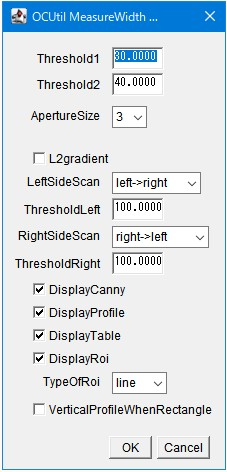

1st January 2026 at 2:43pm
OCUtil_MeasureWidth（エッジ基準の幅・間隔計測）
1. 概要：画像処理の仕組み
このプラグインは、画像内に引かれたラインや矩形（長方形）に沿って、物体の「幅」や「隙間の距離」を自動的に計測する高機能ツールです。
単なる輝度変化ではなく、内部で Canny法エッジ検出 を行うことで、背景と物体の境界を数学的に特定します。そのエッジ画像からプロファイル（強度分布）を作成し、ピーク位置をエッジの端点として認識します。
2. GUIの使い方

パラメータ設定の詳細
- Threshold1 / 2 (Canny閾値):
- 輪郭として抽出する強さの境界線です。
- 調整のコツ: ノイズが多い画像では値を大きく（例：100と200など）設定し、逆に薄い輪郭を拾いたい場合は小さく（例：30と60）設定します。一般的に
Threshold2は1の2〜3倍程度が目安です。
- ApertureSize (Sobelサイズ):
- エッジを計算する際の参照範囲（3, 5, 7）です。
- 調整のコツ: 通常は「3」で問題ありませんが、ピントが甘くエッジがぼやけている場合は「5」以上にすると検出しやすくなります。
- VerticalProfileWhenRectangle:
- 矩形ROI使用時のみ有効な設定です。
- ON: 矩形を縦方向にスキャンして「高さ（垂直方向の幅）」を測ります。
- OFF: 矩形を横方向にスキャンして「横幅（水平方向の幅）」を測ります。
- LeftSideScan / RightSideScan:
- エッジを探索する開始位置と方向です。「左から右」「右から左」「中央から外側へ」などを選択でき、複数の物体がある場合にどれを測るかを制御できます。
- ThresholdLeft / Right (プロファイル閾値):
- Cannyエッジ画像から作られたグラフ上で、どの程度の「エッジの強さ」があれば端点とみなすかを設定します。
- 調整のコツ: 「DisplayProfile」で表示されるグラフの山の高さに合わせて調整します。
- DisplayCanny / Profile / Table:
- 処理結果だけでなく、途中のエッジ画像や輝度グラフ、数値テーブルを表示して、設定が適切か確認できます。
3. 注意点
- ROIの準備: 実行前に必ず、計測したい場所をまたぐように 直線（Line） または 矩形（Rectangle） のROIを引いておく必要があります。
- 対応形式: 8-bit, 16-bit, 32-bit, および RGB画像に対応しています。
- 計測の優先度: 直線ROIがある場合はその線上が優先され、矩形ROIがある場合はその範囲内の平均化プロファイルが使用されます。